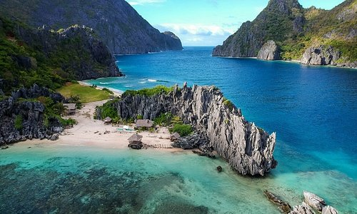
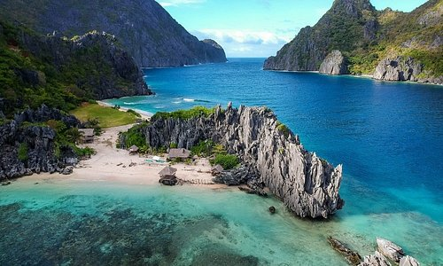

Palawan is the Philippines' answer to paradise. This island province stretches southwest to Borneo, with lush limestone peaks rising from a jewel-like sea so clear, that you can almost see the expressions on the fish from above the surface. Slivers of gleaming white-sand beaches fringed with rustling palms rim many of these jungle-clad islands, while under the water, coral reefs teem with an impressive diversity of tropical fish, offering some of the best diving in the world.
 
